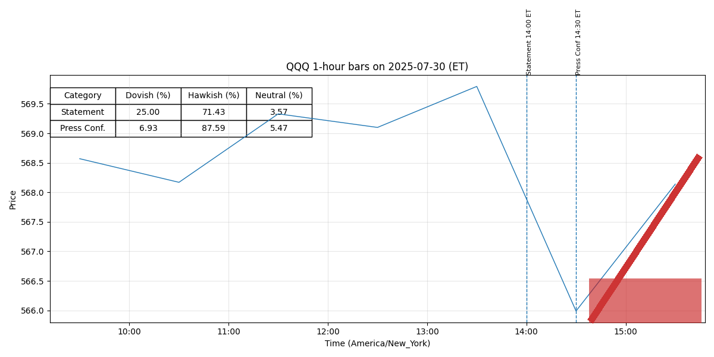

Pres 20250730
Legend: Interpretation of Colors and Intensities
- Dovish (green): easing, lower rates, accommodative policy.
- Neutral (yellow): balanced or data-dependent stance.
- Hawkish (red): tightening, higher rates, restrictive policy.
Color intensity = strength of stance (darker = stronger).
Purple highlight = newly added strong sentences.
July 30, 2025 Chair Powell’s Press Conference FINAL
Transcript of Chair Powell’s Press Conference
July 30, 2025
CHAIR POWELL.
Good afternoon.
My colleagues and I remain squarely focused on
achieving our dual-mandate goals of maximum employment and stable prices for the benefit of
the American people.
Despite elevated uncertainty, the economy is in a solid position.
The
unemployment rate remains low, and the labor market is at or near maximum employment.
Inflation has been running somewhat above our 2 percent longer-run objective.
In support of our goals, today the Federal Open Market Committee decided to leave our
policy interest rate unchanged.
We believe that the current stance of monetary policy leaves us
well positioned to respond in a timely way to potential economic developments.
I will have
more to say about monetary policy after briefly reviewing economic developments.
Recent indicators suggest that growth of economic activity has moderated.
GDP rose at a
1.2 percent pace in the first half of this year, down from 2.5 percent last year.
Although the
increase in the second quarter was stronger at 3 percent, focusing on the first half of the year
helps smooth through the volatility in the quarterly figures related to the unusual swings in net
exports.
The moderation in growth largely reflects a slowdown in consumer spending.
In
contrast, business investment in equipment and intangibles picked up from last year’s pace.
Activity in the housing sector remains weak.
In the labor market, conditions have remained solid.
Payroll job gains averaged
150,000 per month over the past three months.
The unemployment rate, at 4.1 percent, remains
low and has stayed in a narrow range over the past year.
Wage growth has continued to
moderate while still outpacing inflation.
Overall, a wide set of indicators suggests that
conditions in the labor market are broadly in balance and consistent with maximum employment.
Page 1 of 24
July 30, 2025 Chair Powell’s Press Conference FINAL
Inflation has eased significantly from its highs in mid-2022 but remains somewhat
elevated relative to our 2 percent longer-run goal.
Estimates based on the consumer price index
and other data indicate that total PCE prices rose 2.5 percent over the 12 months ending in June
and that, excluding the volatile food and energy categories, core PCE prices rose
2.7 percent.
These readings are little changed from the beginning of the year, although the
underlying composition of price changes has shifted: Services inflation has continued to ease,
while increased tariffs are pushing up prices in some categories of goods.
Near-term measures of
inflation expectations have moved up, on balance, over the course of this year on news about
tariffs, as reflected in both market-based and survey-based measures.
Beyond the next year or
so, however, most measures of longer-term expectations remain consistent with our 2 percent
inflation goal.
Our monetary policy actions are guided by our dual mandate to promote maximum
employment and stable prices for the American people.
At today’s meeting, the Committee
decided to maintain the target range for the federal funds rate at 4¼ to 4½ percent and to
continue reducing the size of our balance sheet.
We will continue to determine the appropriate
stance of monetary policy based on the incoming data, the evolving outlook, and the balance of
risks.
Changes to government policies continue to evolve, and their effects on the economy
remain uncertain.
Higher tariffs have begun to show through more clearly to prices of some
goods, but their overall effects on economic activity and inflation remain to be seen.
A
reasonable base case is that the effects on inflation could be short lived—reflecting a one-time
shift in the price level.
But it is also possible that the inflationary effects could instead be more
persistent, and that is a risk to be assessed and managed.
Page 2 of 24
July 30, 2025 Chair Powell’s Press Conference FINAL
Our obligation is to keep longer-term inflation expectations well anchored and to prevent
a one-time increase in the price level from becoming an ongoing inflation problem.
For the time
being, we are well positioned to learn more about the likely course of the economy and the
evolving balance of risks before adjusting our policy stance.
We see our current policy stance as
appropriate to guard against inflation risks.
We are also attentive to risks on the employment
side of our mandate.
In coming months, we will receive a good amount of data that will help
inform our assessment of the balance of risks and the appropriate setting of the federal funds
rate.
At this meeting, the Committee continued its discussions as part of our five-year review
of our monetary policy framework.
We focused on potential revisions to our Statement on
Longer-Run Goals and Monetary Policy Strategy and are on track to wrap up any modifications
by late summer.
The Fed has been assigned two goals for monetary policy—maximum employment and
price—stable prices.
We remain committed to supporting maximum employment, bringing
inflation sustainably to our 2 percent goal, and keeping longer-term inflation expectations well
anchored.
Our success in delivering on these goals matters to all Americans.
We understand
that our actions affect communities, families, and businesses across the country.
Everything we
do is in service to our public mission.
We at the Fed will do everything we can to achieve our
maximum-employment and price-stability goals.
Thank you.
I look forward to your questions.
MICHELLE SMITH.
Howard.
HOWARD SCHNEIDER.
Thanks.
Thanks, Chair Powell.
There is a lot of “lean” in the
markets and, not to mention, out of the Administration, for a rate cut now in September.
Is that
expectation unrealistic at this point?
Page 3 of 24
July 30, 2025 Chair Powell’s Press Conference FINAL
CHAIR POWELL.
So, as you know, today we decided to leave our policy rate where it’s
been, which—where I would characterize as modestly restrictive.
Inflation is running a bit
above 2 percent, as I mentioned, even excluding tariff effects.
The labor market’s solid—
historically low unemployment.
Financial conditions are accommodative, and the economy is
not—the economy is not performing as though restrictive policy were holding it back
inappropriately.
So it seems to, to me and to almost the whole Committee that the economy is
not performing as though restrictive policy is holding it back inappropriately, and modestly
restrictive policy seems appropriate.
All that said, there’s also downside risk to the labor market.
In coming months, we’ll
receive a good amount of data that will help inform our assessment of the balance of risks and
the appropriate setting of the federal funds rate.
So just to follow up: By, by “coming months,” does that
include the possibility you’ll, you’ll be getting essentially two rounds of jobs and inflation data
between now and the September meeting?
Is that potentially adequate to make a decision to
lower rates at that point?
CHAIR POWELL.
So you’re right.
We do have—this is an, an, an intermeeting period
when we’ll get two full rounds of employment and inflation data before the time of the
September meeting.
We have made no decisions about September—we don’t do that in advance.
We’ll be taking that information into consideration and all the other information we get as we
make our decision at the September meeting.
Steve.
STEVE LIESMAN.
Thank you, Mr. Chairman.
You took out the word—or the notion
that uncertainty has diminished from this statement.
Does that mean uncertainty has increased?
Page 4 of 24
July 30, 2025 Chair Powell’s Press Conference FINAL
And I’m just wondering, the Administration has struck several deals with large trading partners
where it seems like we now know what the rate is going to be.
Does knowing that rate add to
your certainty to change policy, or do you need to wait to see the economic effects?
So, essentially, the statement in the—in the—in our statement about
uncertainty reflects what’s gone on since the last meeting.
So, at the time of the last meeting,
uncertainty had, had, had moved down a little bit, but it was more or less even this time.
So we
took out, you know, “had diminished” because it didn’t diminish further.
So there’s not really
much in that.
And then your second question is—say again?
There have been several deals that have been struck, and now we
seem to have an idea of what the tariff rates are going to be with some of our large trading
partners.
Does that not add to the kind of certainty you might need, or is it you’re waiting for the
economic effects to show, show themselves?
No, I think we’re still—so you’re right, it’s been a very dynamic
time for these trade negotiations, and lots and lots of events in the intermeeting period, but we’re
still, you know, a ways away from seeing where things settle down.
We are clearly getting more
and more information.
And, you know, I think at this point, people’s estimates, our estimates,
outside estimates of the—of the likely, you know, effective, effective level of tariffs is, is not
moving around that much at this point.
But at the same time, there are many, many uncertainties
left to resolve.
So, yes, we are learning more and more.
It doesn’t feel like we’re very close to
the end of that process.
And that’s, that’s not for us to judge, but it does—it feels like there’s
much more to come, you know, as well looking ahead.
Page 5 of 24
July 30, 2025 Chair Powell’s Press Conference FINAL
NEIL IRWIN.
Hi, Mr. Chairman.
Neil Irwin with Axios.
This morning, we got a GDP
report in which final domestic private purchases decelerated—slowest pace since ’22.
There was
a weakness in the interest-sensitive sectors and residential investment, commercial structures.
Are those not signs that monetary policy is a little too restrictive right now, given current
economic conditions?
So the GDP and PDFP numbers came in pretty much right where we
expected them to come in.
You’ve got to look at the whole picture.
So, certainly, as I mentioned
in my opening remarks, economic activity data, GDP, private domestic final purchases—which
we think is a narrower but better signal for future, for where the economy is going—has come
down to a little better than 1 percent, 1.2 percent I think, in the case of GDP for the first half,
whereas it was 2½ last year.
So that has certainly come down.
But if you look at the labor
market, what you see is, by many, many statistics, the labor market is kind of still in balance.
It’s things like quits, you know, job openings, and—let alone the unemployment rate.
They’re
all very—by many measures, very similar to where they were a year ago.
So you do not see a
weakening in the labor market.
You do see a slowing in job creation, but also in a slowing—a
slowing in the supply of workers.
So you’ve got a labor market that’s in balance, albeit partially
because both demand and supply for workers has—is coming down at the same pace, and that’s
why the unemployment rate has remained roughly, roughly stable, which is why I said there—we
do see downside risk in the labor market.
I mean, our two—our two mandate variables—
right?—are inflation and maximum employment—stable prices and maximum employment, not
so much growth.
So the labor market looks, looks solid.
Inflation is above target.
And even if
you—if you look through the tariff effects, we think it’s still a bit above target.
And that’s why
Page 6 of 24
July 30, 2025 Chair Powell’s Press Conference FINAL
our stance is where it is.
But, as I mentioned, you know, downside risks to the labor market are
certainly apparent.
NEIL IRWIN.
So on labor, given the fluid labor supply situation, is there a number for
this jobs report we get on Friday that would look to you like equilibrium job growth?
You know, the, the main number you have to look at now is the
unemployment rate, because if, if—it’s true that the, you know, demand for workers in the form
of, let’s call it—say—just say, payroll jobs—that number has come down, but so has the
breakeven number, kind of in tandem.
So, you know, as long as the—that puts the labor market
in, in balance.
The fact that it’s getting into balance due to declines in both supply and demand,
though, I think does—it is suggestive of downside risk.
So we’re—of course, we’ll be watching
that carefully.
Colby.
COLBY SMITH.
Colby Smith with the New York Times.
Two of your
colleagues called for a quarter-point cut today, and I’m wondering what aspects of their
argument were most compelling to you and how you are weighing their views against those on
the Committee who, as of the June forecast, were in the camp of the Fed holding interest rates
steady for the remainder of the year.
And, and just in terms of the June SEP in particular, is that
still the best representation of where the core of the Committee is?
So on, on the dissents, you know, what you—what you want from
everybody and also from a dissenter is a clear explanation for—of what your thinking is and
what are the arguments you’re making.
And that’s—we had that today.
So I think, basically,
this was—this was quite a good meeting all around the table where people were—you know,
thought carefully about this and put their positions out there.
As I mentioned, you know, the,
Page 7 of 24
July 30, 2025 Chair Powell’s Press Conference FINAL
the—sort of the majority of the Committee was of the view that inflation’s a bit above target,
maximum employment is at target.
That calls for modestly restrictive—in my way of thinking, a
modestly restrictive stance of policy for now.
But we had two dissenters who, I think—you
know, you want that clear thinking and, and, and, you know, expression of your thinking, and we
certainly had that today, I think all around the table.
In terms of—you asked about the June SEP.
You know, I wouldn’t—you’re right that that’s what it—that’s what it says, and that may—that
may well—I, I couldn’t point to it six weeks later as, as expressing people’s thought—you really
can’t do that.
We don’t run an SEP, and I don’t like to substitute in my own estimate of what the
SEP might be.
We don’t have one.
So I’ll just say that, you know, we, we haven’t made any
decisions about September.
We’ll be monitoring all the incoming data and asking ourselves
whether the federal funds rate is in the right place.
And, just on the point about policy being only modestly restrictive,
does that mean that there’s actually not much scope to reduce rates once the conditions for a cut
are met, barring a significant weakening of the labor market?
So let me say, my own estimate is modestly restrictive.
And there
are—there are a range of views of what the neutral rate is at this moment for, for our economy.
And so others may say it’s more restrictive or less restrictive even.
You know, we’re—we’re
going to be—at some point, when we return to moving toward a more neutral stance, we’ll be
making that judgment as we go.
I don’t think we have a preset course.
It’s not so mechanical as
saying, you know, “We’ve derived with great confidence the neutral rate, and that is our
destination,” because, really, we understand that no one actually knows what the neutral rate is.
We know it by its works, and that will be how—the way the economy reacts over time to—you
know, to slightly looser policy.
Page 8 of 24
July 30, 2025 Chair Powell’s Press Conference FINAL
MICHELLE SMITH.
NICK TIMIRAOS.
Nick Timiraos, the Wall Street Journal.
Chair Powell, my question
is about, what have you learned over the last few months about the inflation-generating and price
pass-through process?
And just to drill down: The June CPI report showed evidence of tariff-
induced goods inflation.
Now the tariff landscape is only starting to be settled with some of
these more recent deals.
Given the lags between when tariffs are announced and when they
show up in goods prices, is two months a long enough horizon to evaluate the impact and be
confident that tariffs aren’t impacting the broader inflation process?
I think you have to think of this as still quite early days.
And so I
think what we’re seeing now is substantial amounts of tariff revenue being collected, on the
order of $30 billion a month, which is, you know, substantially higher than, than before.
And the
evidence seems to be, mostly not paid, but paid only to a small extent, through exporters
lowering their price.
And companies or retailers, sort of people who are upstream—institutions
that are upstream from the consumer, are paying most of this for now.
Consumers are—it’s
starting to show up in consumer prices.
As you know, in the June report, we expect to see more
of that.
And we know from surveys that companies feel that they have every intention of, of, of
putting this through to the consumer.
But, you know, the truth is, they may not be able to in
many cases.
So I think it’s—we’re just going to have to watch and learn empirically how much
of this and over what period of time.
I think we’ve learned that the process will probably be
slower than, than expected at the beginning, but we never expected it to be fast.
And we think
we have a long way to go to really understand exactly how we’ll be.
So that’s how we’re
thinking of it right now.
Page 9 of 24
July 30, 2025 Chair Powell’s Press Conference FINAL
NICK TIMIRAOS.
So if I could follow up, is the reticence to “look through” core goods
inflation being driven by the judgment that during the pandemic, expectations proved more
adaptive than anyone at the Fed expected?
Is it being driven by uncertainty over how restrictive
policy is?
You could argue we are, a bit, “looking through” goods inflation by
not raising rates.
You know, we haven’t reacted to, to new inflation.
But, I mean, I wouldn’t—I
wouldn’t insist upon that.
But I don’t think—I think the base case—I said—as I said, a
reasonable base case is that these are one-time—one-time price effects.
Of course, in the end,
there, there will not be.
This will not turn out to be inflation, because we’ll make sure that it’s
not.
We will, through our tools, make sure that this does not move from being a one-time price
increase to serious inflation.
We want to do that efficiently, though, efficiently.
And that means
we want to do it—if you—if you move too soon, you wind up maybe not getting inflation all the
way fixed, and you have to come back.
That’s inefficient.
If you move too late, you might do
too—unnecessary damage to the labor market.
So there won’t be, in the end, a big inflationary
problem.
What we’re trying to do is accomplish that in a way that is efficient.
But in the end,
there should be no doubt that we will do what we need to do to keep inflation under control.
Ideally, we do it efficiently.
Michael.
MICHAEL MCKEE.
Michael McKee from Bloomberg Television and Radio.
The One
Big Bill, leaving aside the adjectives—do you expect it to add stimulus to the economy in 2026?
And would that be an argument for remaining on hold or cutting back on the number of rate cuts
you would expect for next year?
Page 10 of 24
July 30, 2025 Chair Powell’s Press Conference FINAL
CHAIR POWELL.
So, of course, let me just—ritual disclaimer that we don’t express
any judgments or anything, right, on, on fiscal legislation or other legislation, for that matter.
But I would say, when you think that, you know, the biggest part of the bill was, was making
permanent existing law on, on taxes, I don’t think we see it as particularly stimulative.
There
should be some stimulative effect, but it shouldn’t be significant over the next couple of years.
And to follow up, what do you—well, I don’t want to put this in
terms of you and the President, so let me ask it this way: Do you have concerns about the cost to
the government of keeping rates elevated for longer in terms of interest rate charges?
No, that’s—you know, we, we have a mandate, and that’s maximum
employment and price stability.
And it is—it’s not something we do, to consider the cost to the
government of our rate changes.
We have to be able to look at the goal variables Congress has
given us—use the tools they have given us to achieve those goals.
And that’s what we do.
It’s—we don’t consider the fiscal needs of the federal government.
No advanced-economy
central bank does that.
And it wouldn’t be good for—if we did do that, it would be good neither
for our credibility nor for the credibility of U.S. fiscal policy.
So it’s just not something we, we
take into consideration.
Victoria.
VICTORIA GUIDA.
Victoria Guida with Politico.
When it comes to the
renovations of the Federal Reserve’s headquarters that the Administration has been looking into,
do you see their interest in that issue as being directly tied to the President’s push to get you to
lower interest rates?
Not for me to say.
I will say, we had a—we had a nice visit with the
President.
It was an honor to host him.
It’s not something that happens very often at the Federal
Page 11 of 24
July 30, 2025 Chair Powell’s Press Conference FINAL
Reserve—to have the President come over, let alone to visit a building—but it was—it was a
good visit.
Are there any aspects of the project that they’ve raised that you see
as making you reconsider any aspects of the project?
So, you know, we—this project was hatched and conceived almost a
decade ago now, and we went through the very long process of clearing it through historic
preservation at the National Capital Planning Commission and a lot of back-and-forth there.
It
was very constructive.
We started out to do the work, and we’re very well along on that work.
And I was quite pleased to have the President say multiple times that what he really wanted to
see was, was us getting this construction completed as soon as possible.
That is our focus, and
that’s what we’re going to do.
Andrew.
ANDREW ACKERMAN.
Thanks, Mr. Chairman.
Andrew Ackerman with the
Washington Post.
What message do you take from the fact that inflation hit 2.1 percent last
September and has bounced higher since?
Why do you think financial conditions are restrictive
and in neutral rates below 4 percent when inflation has stopped falling for almost a year?
So inflation—when you talk about these 12-month inflation
measures, you’re always battling residual seasonality.
So we’ll have, for example, two months
of high inflation, sometimes early in the year, and then inflation turns lower.
And a lot of that
may just be an artifact.
So that’s why we look at the 12-month numbers.
I—look, I think
inflation is most of the way back to 2 percent.
There are things like the catch-up inflation.
So,
for example, all the insurance costs that are now—they’re only now going through inflation, but
they actually reflect inflationary pressures from two, three years ago.
So there’s—that’s got to
Page 12 of 24
July 30, 2025 Chair Powell’s Press Conference FINAL
go through.
In addition, now we have, you know, three- or four-tenths of inflation in core
inflation from tariffs.
So—and we, we, we can’t really separate that out.
We’re not going to
have a separate, you know, kind of inflation that isn’t the tariffs.
We’re always going to be
dealing with the whole—all of inflation.
But we—the composition, as I mentioned, has really
changed.
And, you know, if you go back to the last couple of years, it was all about services
inflation, which was being very sticky.
Now services inflation is coming down nicely.
Goods
inflation was well behaved before, and now goods inflation is going up.
So the story has really
changed.
That’s partially because of tariffs.
It’s also partially because we had restrictive policy
in place, and we—and we’ve seen that—the result of that gradually work its way through the
services economy.
The other thing I wanted to ask is, are you comfortable
that BLS can continue performing their mission effectively if they take an 8 percent reduction in
head count and authorized spending, as the Administration has proposed?
I’m not going to comment on the Administration’s proposal.
I do
think—as I’ve said, I think that we—you know, we’re, we’re getting the data that we need to do
our jobs.
And I think it’s really important that, that good data helps not just the Fed—it helps the
government, but it also helps the private sector.
You know, people in the economy—they, they
use this data a lot, too.
So it’s quite important for our economy and, certainly, for the Fed’s work
and other government agencies’ work that we—that we continue to get better at data.
That’s
what we’ve been doing for 100 years.
We’ve been getting better and better and better.
It’s very
hard to accurately capture in real time the output of a $20-plus trillion economy.
And the United
States has been a leader in that for 100 years, and we really need to continue that, in my view.
Edward.
Page 13 of 24
July 30, 2025 Chair Powell’s Press Conference FINAL
EDWARD LAWRENCE.
Edward Lawrence from Fox
Business.
How concerned are you, with, with the data that we’re showing—coming in showing
no significant upward trend in inflation over the past six months, that the wait-and-see approach
for inflation is actually giving companies cover to raise prices?
How concerned am I that the—say that again.
EDWARD LAWRENCE.
That the wait-and-see approach is getting—
CHAIR POWELL.
The wait-and-see approach—what do you mean by that?
For, for cutting rates.
You’re waiting to see if the tariffs will
affect inflation.
So it’s a wait-and-see approach so that—
CHAIR POWELL.
Well, so that—you know, that would—that’s where we’re—policy’s
restrictive.
When we start cutting, it’ll go toward neutral.
This delay, though, where you’re saying it’s a one-
time—one-time price increase for tariffs, which they—which possibly could lead into bigger
inflation or more inflation, is that giving companies cover, though, to raise prices?
Well, what, what may be giving—it’s not our policy stance.
What
may be giving—some companies will certainly be taking advantage of the fact of the tariffs and
all of the discussion of how they’re going to—you know, companies will raise prices when and
as they can.
And you—so you saw it famously in the—in the—in the first Administration of
President Trump, during those tariffs.
Washing machines were tariffed, but, but, but dryers
weren’t.
But what do you know?
Price—the price of dryers went up, too, just like washing
machines.
So companies will often just take—they’ll cross the street in a group, if you know
what I mean.
That’ll happen.
We don’t see a lot of that.
I mean, what we see now is basically
the very beginnings of whatever the effects turn out to be on goods inflation.
And, you know,
Page 14 of 24
July 30, 2025 Chair Powell’s Press Conference FINAL
I’ll say again, they may be—they may be less than, than people estimate or more than people
estimate.
They’re not going to be zero.
Consumers will pay some of this.
Businesses will pay
some of this.
Retailers will pay some of this.
But, you know, we’re just going to have to, to see
it through.
And just a follow-up, if I could.
Some additional tariffs have
been in place since February, and things, you know, really haven’t broken yet with the economy.
So how, how do you justify to somebody who’s looking for a house, who’s facing a 7 percent
mortgage and maybe can’t afford those rates?
How do you justify that?
Well, so the housing—the housing is a—is a special case.
Right?
Our—we don’t set—we don’t set mortgage rates at the Fed, right?
We set an overnight rate, and
the rates that go into mortgages are longer-term rates, like Treasury rates—it might be 30-year
rates, it might be shorter than that, but it’s not the overnight Fed’s rate.
It’s not that we don’t
have any effect.
We do have an effect, but we’re not the main effect.
There are other things
go—though, going on in the housing sector.
And one of those is just, there’s kind of a long-term
housing shortage that we have.
We haven’t built enough housing.
This is not something the Fed
can help with, but then that’ll be the case even after things normalize.
So I, I think the best thing
that we can do for housing is to have 2 percent inflation and maximum employment.
And that’s
the—that’s what we can contribute to housing.
There are lots of other jobs to do for the private
sector and Congress, but that’s what we’re trying to get to.
And, I mean, we’ve made a lot of
progress toward that.
We’re in—we have a very good labor market right now.
Inflation—we
were very close to 2 percent.
We’re seeing some goods inflation move us away but, so far, not
very far away.
Chris.
Page 15 of 24
July 30, 2025 Chair Powell’s Press Conference FINAL
CHRISTOPHER RUGABER.
Hi, Chair Powell.
Well, can you give us a
little more about, what kind of economic data does the Fed need to see before you’ll be ready to
cut?
I mean, do you need inflation back nearly to target?
Are there other things in the pricing
that you look for?
Do you need to see weakening in the job market?
What kind of things are
you looking for?
I mean, ultimately, it’s—it could be any—it could be any of those
things.
But, but, you know, if you saw that the risks to the two goals were moving into
balance, if they were fully in balance, that would imply that you should move toward a more—a
more neutral stance of policy.
This is—this is the special situation we’re in, which is, we have
two-sided risk, risk to both of our goals.
When we paused, inflation was above target, and the
labor market was pretty good.
So, so, you know, that was a time when policy—policy was
restrictive when we paused.
And to be restrictive is to be—to be supporting a return to our
inflation target, right?
So as the two targets get back into balance, you would—you would think
you’d move in, in, in a way closer to neutral and that the next—the next steps that we take are
likely to be in that direction.
What will it take?
You know, it’ll just take—it’ll be the totality of
the evidence.
As I mentioned, there’s quite a lot of data coming in, which, before the next
meeting, will it be dispositive of that?
I—you know, it’s really hard to say.
We don’t make
those decisions right now.
So we’ll have to see.
CHRISTOPHER RUGABER.
Well, I guess just in terms of inflation, though, for
example, like, will, will you—some people would point to, if it remains only in goods and it
doesn’t bleed over to services, then maybe that’s evidence that the tariff effect is going to be a
temporary, one-time thing.
Is that kind of thing affect your thinking, or do you just need to see
the number come down—closer to 2?
Page 16 of 24
July 30, 2025 Chair Powell’s Press Conference FINAL
CHAIR POWELL.
I think—we’ll, we’ll, we’ll look at everything.
You know, it’s—as I
mentioned, you know, a pretty reasonable base case is that this will be a one-time price increase.
And, in the end, we’ll make sure that that’s the case.
We’re just trying to do that efficiently.
We’re—and “efficiently” means getting the timing right so we don’t—again, if we go—if we cut
rates too soon, maybe we didn’t finish the job with inflation.
There’s—history is dotted with
examples of that.
If you cut too late, then maybe you’re doing unnecessary damage to the labor
market.
So we’re trying to—we’re trying to get that timing right, and that’s effectively what
we’re doing.
Claire.
CLAIRE JONES.
Claire Jones, Financial Times.
Just a question on the dollar.
We’ve
seen it decline quite heavily this year.
I was wondering if there’s been any discussion about that
at the meetings and how—to what degree that might be complicating your attempts to get
inflation back to target.
So this goes back to the division of labor between the Fed and the
Treasury—as you, I’m sure, know—and, you know, the, the, the Treasury only speaks to the—
speaks to the dollar.
It’s not—it’s not something that’s been a topic of, of, you know, major
discussion at all at, at—at the—at the Fed.
I won’t say it doesn’t come up.
The [FOMC
meeting] transcripts, when they come out in a few years—they’ll probably reflect some mentions
of the dollar.
But it would never be a, a major focus.
And just to follow on, if I may, to Andrew’s question, I think the
amount of imputed data in CPI now is up to 35 percent.
I mean, is there any discussion of that as
well?
Is there any consideration of looking at—into alternative measures, data scraping and so
Page 17 of 24
July 30, 2025 Chair Powell’s Press Conference FINAL
on, in order to just ensure you’ve got a good read on what’s happening to prices in the U.S.
economy?
Yeah, we’re—so we’re monitoring the situation.
We do, of course—
I mean, as you know, during the pandemic, we looked at a whole lot of new kinds of data.
People are looking at big data sets that you can get from all sorts of places.
And we do all of
that.
But at the same—we really need—the government data really is the gold standard in data,
and we need it to be—you know, to be good and be able to rely on it.
And we’re not going to be
able to substitute for that.
But if—we have to make do with what we have, but I certainly hope
that we get what we need.
Jay O’Brien.
JAY O’BRIEN.
Jay O’Brien, ABC News.
President Trump has
obviously invoked your name a lot.
He has personally pressured you.
Are you concerned the
way that conduct might impact the Fed’s independence going forward?
I’ll just say that—so I, I think that having an independent central
bank has been an institutional arrangement that has served the public well.
And as long as it
serves the public well, it should continue and be respected.
If it didn’t serve the public well,
then, then it wouldn’t be something that we should just automatically defend.
But what it gives
us and other central banks—what it gives you is the ability to make these, these very challenging
decisions that—in ways that are focused on the data and the evolving outlook, the balance of
risks, and all the things we talk about, and not political factors.
And so governments all over the
advanced-economy world have chosen to put a little bit of distance between direct political
control of those decisions and the decisionmakers.
So if you—if you were—if you weren’t—if
you were not to have that, that would be a great temptation, of course, to, to use interest rates to
Page 18 of 24
July 30, 2025 Chair Powell’s Press Conference FINAL
affect elections, for example.
And that’s something that, that we don’t want to do.
So I think
that’s pretty widely understood.
Certainly, it is in Congress.
And, I mean—I mean, I think it’s
very important.
I’ll just say that.
Maria Eloisa.
MARIA ELOISA CAPURRO.
Afternoon, Chair Powell.
Maria Eloisa Capurro from
Bloomberg News.
You mentioned a slowdown in consumer spending, and I wanted to see if you
could “walk us through” what was the discussion with the Committee around that.
We’ve seen
delinquency rates rising for upper-income households.
How do you see that evolving in the next
few months, and how much of a vulnerability that is for the economy going forward?
Consumer spending had been very, very strong for the last couple of
years and had—repeatedly, forecasters, not just us, had been forecasting it would slow down.
And now maybe it finally has.
So I would say, you know, if you talk to credit card companies,
for example, they will tell you that the consumer is in solid shape and that spending is at a
healthy level.
It’s not growing rapidly, but it’s at a healthy level.
And delinquencies are not, not
a problem.
You mentioned high-end delinquencies.
I don’t know what to make of that.
I read
the same thing.
But—so, generally—and if you look at the banks and when the banks talk about
in their earnings calls, their—the performance of credit has been good.
So, essentially, you, you
have a consumer that’s in good shape and is spending, not at a rapid rate.
But it, it, it’s true.
And it was, again, right in line with what we expected, the GDP data that we got this week.
So—and I think it’s still a little bit difficult to interpret, because you have these massive swings
in net exports, which, which may also be affecting—you know, some of that can be affected
by—can affect consumer spending as well.
Look, we—it’s one of the data points that we pay
most careful attention to, and there’s no question that it’s slowed.
And, you know, we’re
Page 19 of 24
July 30, 2025 Chair Powell’s Press Conference FINAL
watching it closely.
But we also watch the labor market and the performance of inflation.
Those
are our two—those are our two variables that we’re assigned to maximize.
And just to follow up on what my colleagues were asking
about the dissents: Governor Waller said that the labor market is on edge, and he was pointing to
weaknesses on the private sector.
I was wondering, you’ve said that the main number to look at
is the unemployment number overall, but what was the discussion about the state of the private
jobs market?
So I’m not going to talk about any individual’s—you know, any
individual’s comments.
I wouldn’t do that.
But, look, I think what we know is that private-
sector job creation, you know, certainly in the last report—we’ll see on Friday—but had come
down a bit.
And, and if you—if you take the QCEW adjustment seriously, with it—it may be
even low—maybe close to zero.
But the unemployment rate is still—was still low.
So, what
that’s telling you is that, that, you know, demand for workers is slowing, but so is the supply.
So
that’s a—it’s in balance, oddly enough.
You’ve got a very low unemployment rate, and it’s kind
of been there for a year as job creation has moved down, but also we know that, you know,
because of immigration policy really, the flow into our labor forces is just a great deal slower.
And those two things have slowed more or less in tandem.
If you look at things, like I
mentioned, quits, look at wages—wages are gradually cooling—look at vacancies to
unemployment, those things have been pretty stable for—they haven’t really moved a lot in a full
year.
So I think if you take the totality of the labor market data, you’ve got a solid labor market.
But I think you have to see that there are downside risks.
It’s not—you don’t see weakening in
the labor market, but I think you’ve got downside risks in a world where unemployment’s being
Page 20 of 24
July 30, 2025 Chair Powell’s Press Conference FINAL
held down because both demand and supply are declining.
I think that’s—it’s worth paying
close attention to it, and we are.
Nancy.
NANCY MARSHALL-GENZER.
Nancy Marshall-Genzer with
Marketplace.
One more question on the lack of unanimity in today’s decision, the two dissents.
Was there talk during the meeting?
I know you’re not going to talk about what—exactly what
individuals said, but, in general, was there talk during the meeting of cutting rates, and what was
the case against that at the meeting?
So, you know, we have—we have an economic go-round,
where people talk about the economy, and then the next—to—then to—that’s yesterday.
And
then today, we have a monetary policy go-round, all the way around the table—everyone gives
their views.
So the discussion around policy was—the majority view was, was still what it has
been, which is that inflation is running above target, maximum employment is right at target.
That means policy, policy should be a little bit restrictive, somewhat restrictive, because we
want—we want inflation to, to move all the way back to its target.
So that’s where people have
been and still are.
Two of our members felt that the time had come to cut and that they—for the
reasons that they’re—they’re going to express.
I won’t tell you the reasons.
They—they’ll issue
some kind of a—of a thing in the next day or so.
So—but that’s the story.
And I would say, you
know, well argued, very thoughtfully argued all around the table, good arguments.
And, you
know, it’s a situation where—an unusual situation.
The economy is in—is in, you know, good
shape, but it’s an unusual situation where you have risks to both your employment mandate and
your inflation.
That’s the nature of a supply shock.
And it’s probably not surprising that there
would be differences and different perspectives on that as well as different views of where the
Page 21 of 24
July 30, 2025 Chair Powell’s Press Conference FINAL
neutral rate is, so they—different views of how tight policy is.
So we have those.
I will say,
what you hope is that people, you know, explain their, their positions very thoughtfully and
clearly.
And we absolutely had that today all the way around the table.
I would call it one of the
better meetings I can recall from that standpoint.
And you’ve said you’re waiting to be confident
inflation is heading toward your 2 percent target before you start cutting rates.
When you do get
that confidence, would you be in—would you be in favor of lowering rates right away?
It’s not, not quite the way I would put it.
You know, I said that’s
why we think policy should, should be restrictive, is because, you know, inflation is above target.
When we—when we have risks to both goals—one of them is farther away from goal than the
other, and that’s inflation.
Maximum employment’s at goal.
So you have to—that means policy
should be tight because tight policy is what brings inflation down.
If you came to the view that
the risks to the two were more in balance, that would imply that policy shouldn’t be restrictive, it
should be more neutral—more, more, you know, a neutral stance.
And that would be somewhat
lower than where we are now.
No one knows exactly where that is.
So that’s—that’s the
framework I think I’d be taking.
And, you know, we’ll just have to see.
We’re going to be
obviously looking at a lot of data in the next cycle.
It is one of the cycles where we have two
employment and two inflation reports, and we’ll see where that takes us.
Jeff Cox.
JEFF COX.
Thank you, Mr. Chairman, for taking the question.
Jeff Cox from
CNBC.com.
A metric that you like to cite a lot is the final sales to private domestic purchasers.
That was down to a 1.2 percent gain in the second quarter from 1.9 percent in Q1, suggesting
that there’s some softening in underlying demand.
Just wondering if you look at that and you
Page 22 of 24
July 30, 2025 Chair Powell’s Press Conference FINAL
combine that with some of the housing numbers that—with the weakness that you acknowledge
at the top of your remarks—that the housing market is, in fact, weak.
And the inflation numbers
from GDP today came down 2.1 percent for headline, 2.5 percent for core.
I’m wondering how
much more movement you would need to see from these data points before you would be
comfortable with cutting in, say, September.
It’s going to be the total—hard to answer that specifically.
PDFP, I
think, for the first half—private domestic final purchases, or final sales, as people call it—was
1.6 on the first half.
GDP, I believe, was 1.2 percent.
So that’s the whole half.
You mentioned
the quarters.
So those are slower.
But, you know, GDP is bumpy quarter to quarter, half to half,
and often gets revised, you know, after the fact.
The labor market data, we, we still think, is—
continue to think, is the best data we have on the economy.
And that shows a 4.1 percent
unemployment rate.
It shows wages, you know, still at a healthy level, but moving ever closer to
what we would regard as long-run sustainable, consistent with longer-run productivity and
2 percent inflation.
So the labor market is actually still quite solid.
Even ignoring tariffs, it’s a little bit above target.
And tariffs—so we’re watching all of that and,
again, trying to—trying to do the right thing in what is a challenging situation, because you’re
being pulled in two directions and you have to decide which of those it took to go in.
And,
actually, at some point, if they’re—if they’re sort of equally at risk, then you really want to be at
a neutral policy stance, which we’re not right now.
So it’d be safe to say that, if the data kind of stays in line with where it is
right now, that you wouldn’t be comfortable with cutting in September?
I’m not going to—I’m not going to say that.
I, I, I just think
we’re going to need to see the data, and it can go in many different directions—the inflation data
Page 23 of 24
July 30, 2025 Chair Powell’s Press Conference FINAL
and, and the employment data.
And we’ll just—we’re going to make a judgment based on all of
the data and based on that balance-of-risks analysis that I mentioned.
Greg Robb, for the last question.
GREG ROBB.
Greg Robb from MarketWatch.
The Treasury
Secretary has said recently that it would be confusing for the markets if you stayed on as a
Governor after your term on the—as Chair ends.
And I was wondering if you had any update for
us on—a decision on that front.
Sorry, I do not have any update for you.
Thanks very much,
everyone.
Page 24 of 24
